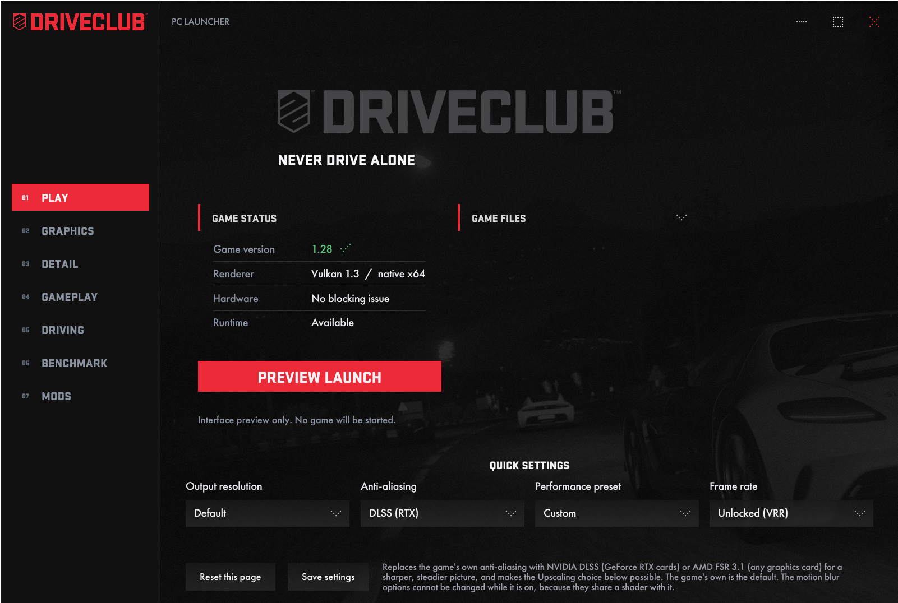
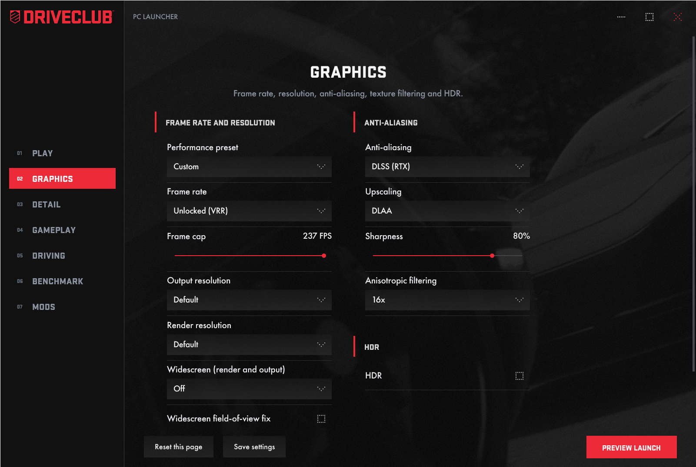
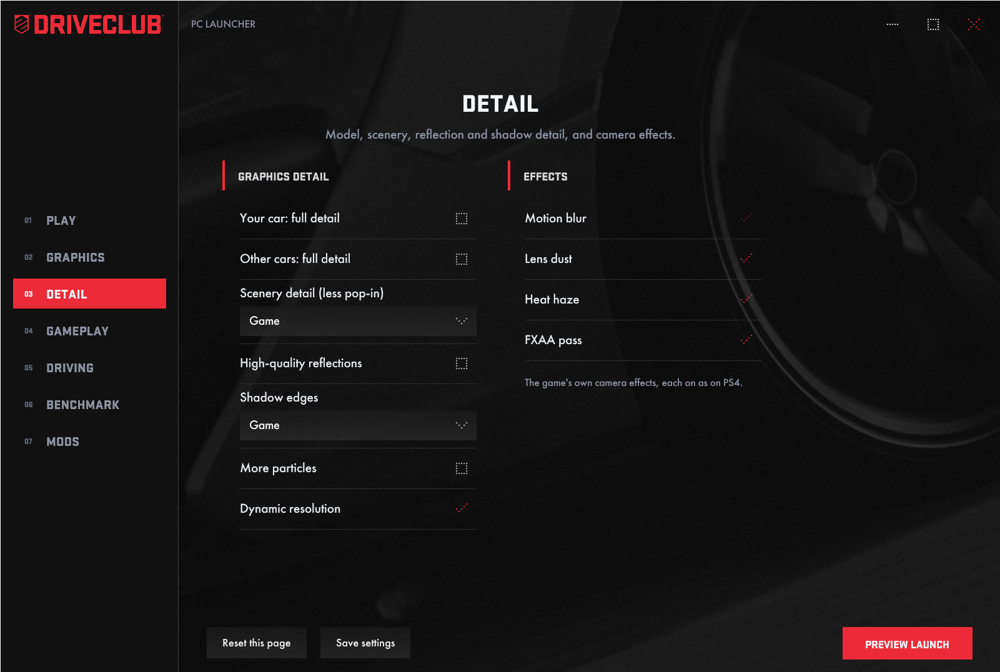
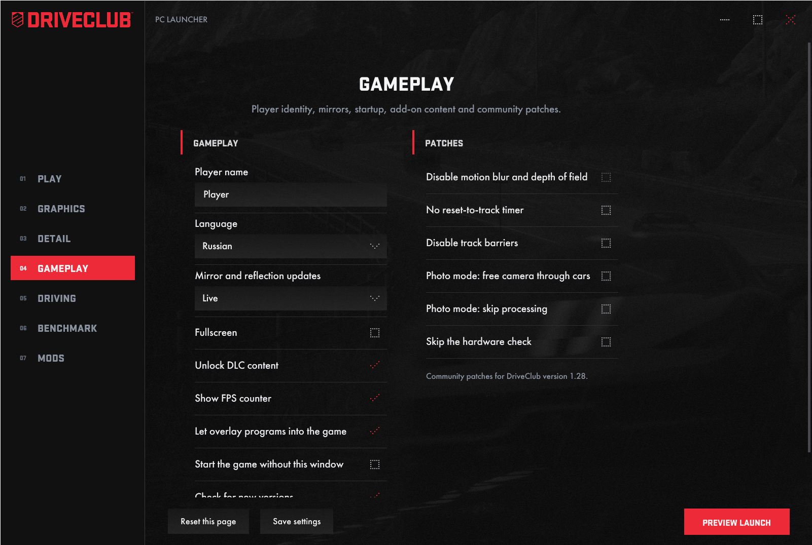
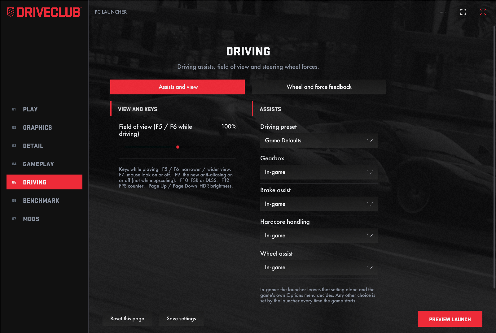
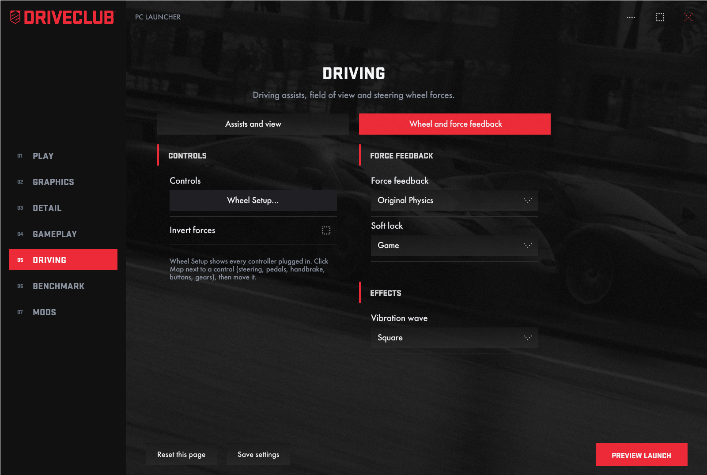
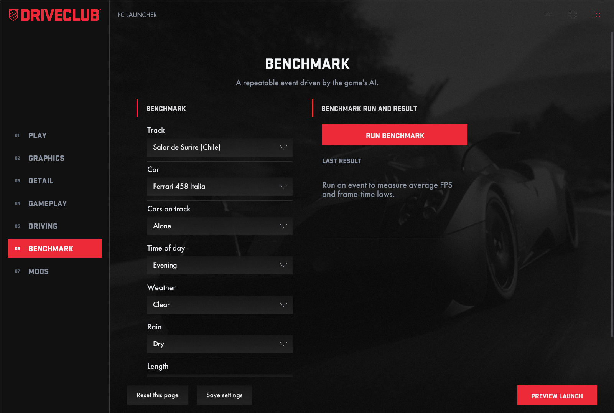
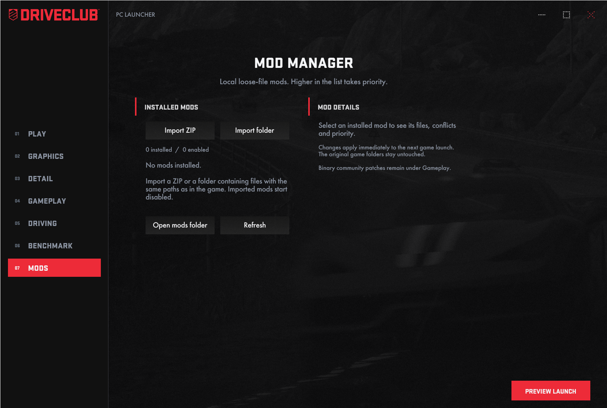
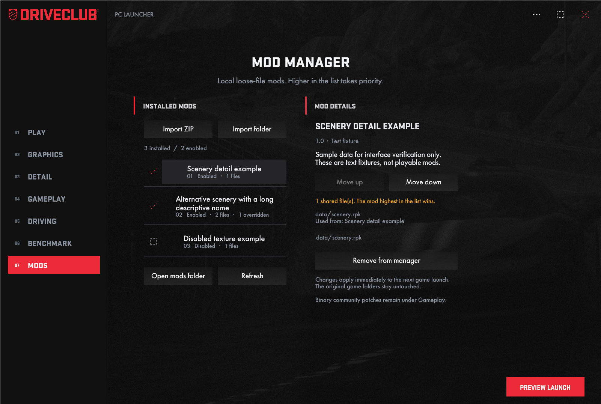

DRIVECLUB Launcher
Current launcher build, presented in screen and menu order.
Play

Graphics

Detail

Gameplay

Driving

Wheel and force feedback

Benchmark

Mods — initial state
The new Mods page manages local loose-file replacements. Import a ZIP archive or a folder, enable or disable each mod, and adjust priority with Move up / Move down. The mod highest in the list wins when enabled mods share a file.
Changes apply immediately for the next game launch. Original game folders are kept intact. Existing manual files in the launcher's mods folder are protected against overwriting.

Library, priorities and conflicts

Shared paths and their winning mod appear in Mod Details. Removing a mod deactivates its files and removes its entry; its imported copy is kept in the local library for recovery. Binary community patches remain under Gameplay.